The eloquence contest on the 14th of April was an intense and Homeric moment for all the students.
The teachers were impressed by the level of public speaking techniques used by the candidates.
Original presentations, different styles, and various tones of voice made this event a success.
The subject for this contest: Metaverse, is life elsewhere?
Speech contests give candidates a variety of topics based on specific themes that must be treated with a minimum of thought.
For the contest hosted on 14th of April, the jury came together to impose a single topic.
The subject "Metaverse: is life elsewhere?"
particularly touched the candidates because it was related to the students' field of duty.
The topic was therefore very popular,
clearly orienting towards the field of digital and new technologies,
including the metaverse,
an emerging and current concept raising several questions
about their use in our modern world.
The candidates
For this contest, 12 candidates from the computer science department, including 10 in BUT INFO and 2 in BUT STID,
were chosen from their respective classes after pre-selection in each group.
A. Brunella
M. Mazigh
P. Teva
B. Youssef
D. Sylla
S. Oussama
A. David
H. Kais
S. Tinhinane
V. Quentin
Keinan
Ann
Candidate: Mazigh
A student from the Cygnus group in BUT Info, Mazigh
gave a speech in favour of the metaverse,
explaining the metaverse as a revolutionary project,
that will change the way we live, work and communicate.
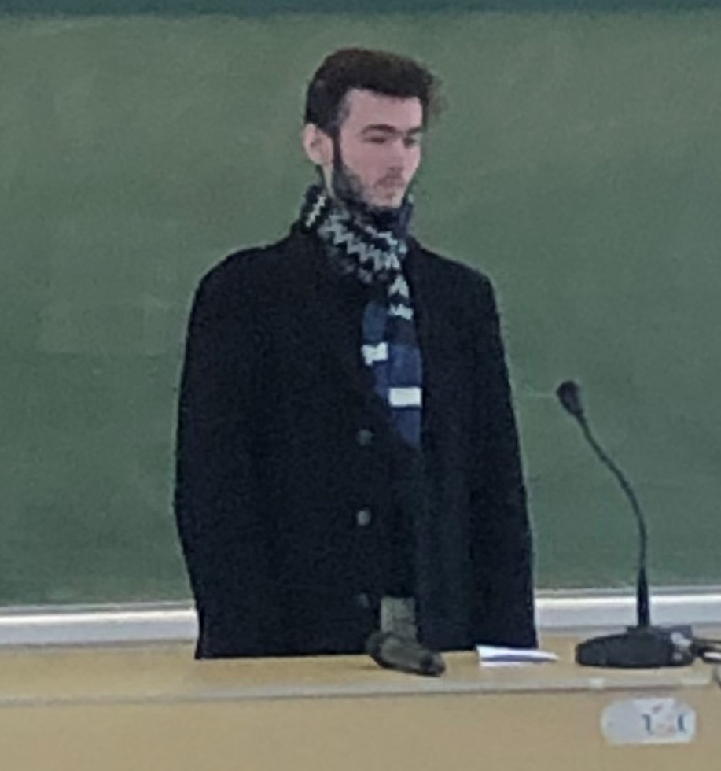
Candidate: Quentin
Student of the Pegasus group in BUT Info,
Quentin gave us an idea of hope
about the metaverse through the portrait
of a man who planned to end his
his life to escape from reality,
but who changes his mind by regaining hope
thanks to the multiple ray of hope from the Metaverse,
all while using rhymes.
Candidate: Tinhinane
"Life has to surpass technology."
Student of the Andromeda group in BUT Info,
Tinhinane tied with Kais for 1st place in the contest with a
speech against the introduction of metaverses,
which would bring chaos to the world around us.
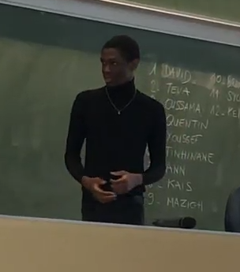
Candidate: David
A student from the Draco group in BUT Info,
David told the story of two friends:
Cedric who is addicted to alcohol and
Leo who is addicted to the metaverse.
With the contrast between virtual and real life,
and the reversal of the characters to the opposite life,
he therefore compares the metaverse to a drug that one can take,
but which they should not abuse.
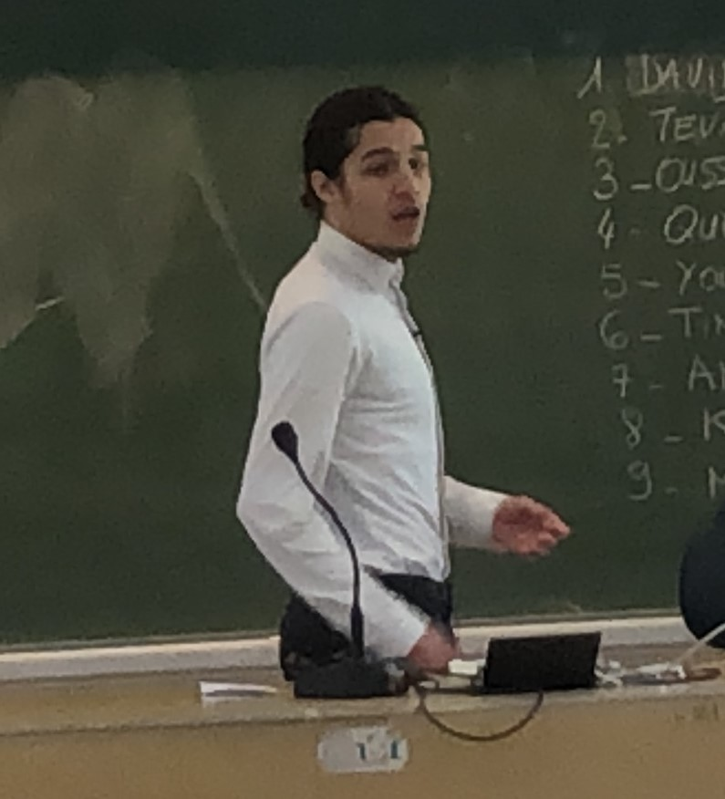
Candidate: Kaïs
Student of the Andromeda group in BUT Info,
Kais won 1st place ex-aequo with Tinhinane
with a courtroom performance as a lawyer defending
Life of the Guilty Metaverse.
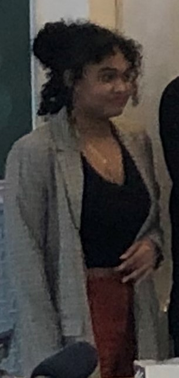
Candidate: Brunella
A student of the Pegasus group in BUT Info,
Brunella gave us an emotional performance,
expressing aloud the despair that
humanity could face
with the introduction of technologies such as the metaverse.
Candidate: Teva
Student of the Cygnus group in BUT Info, Teva opted for a speech oriented on
the various benefits that the metaverse could bring to our lives.
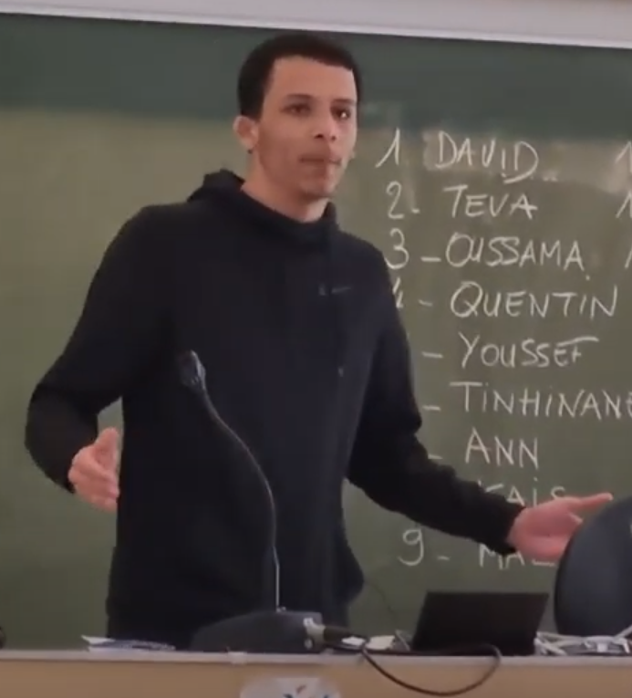
Candidate: Youssef
"The metaverse is nothing but the logical continuation of what we have built so far."
A student from the Draco group in BUT Info, Youssef referred to the lockdown period
the world has experienced recently, and how a technological advance such as the metaverse
could have saved thousands of lives lost to depression caused by this period of isolation
in the world.
Candidate: Sylla
Student of the Phoenix group in BUT Info,
Sylla won 2nd place in the competition
with an improvised and original stand-up comedy show.
Candidate: Oussama
"Dreaming of your life, rather than living a dream life?"
Student of the Phoenix group in BUT Info, Oussama spoke for the side of the opposition against the
metaverse, explaining that life on those platforms is not real and cannot replace real life,
which despite its flaws offer so many possibilities that metaverse can't offer.
Candidate: Keinan
A BUT STID student, Keinan chose a very original
presentation in the form of a slam, which the jury thought deserved 3rd place.
Gallery of the 14th of April 2022
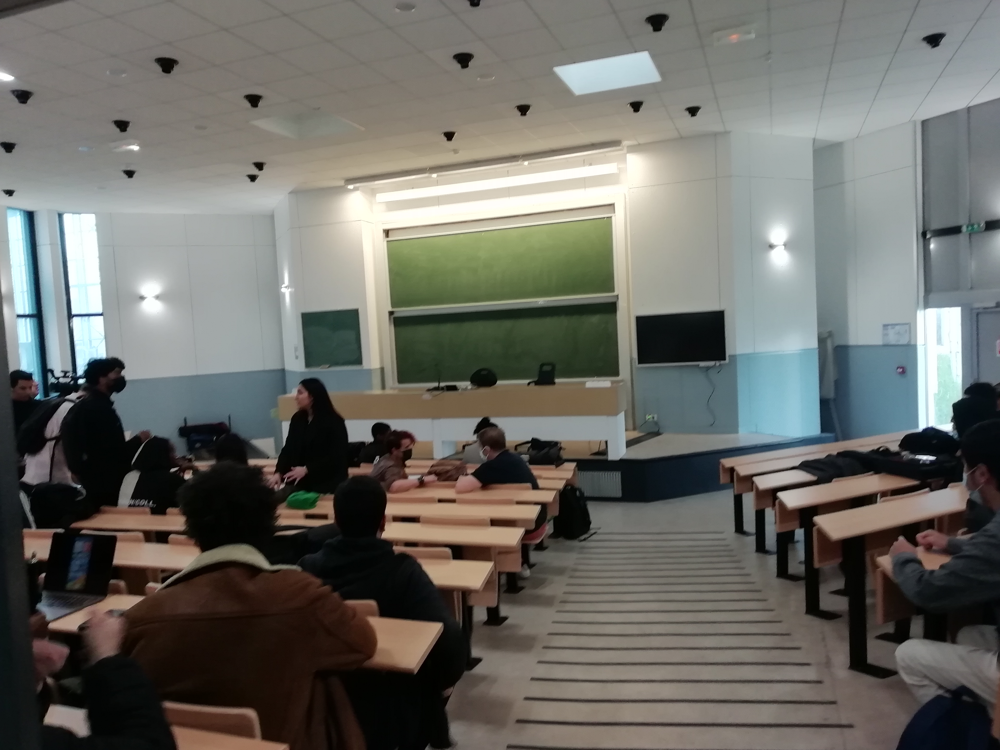
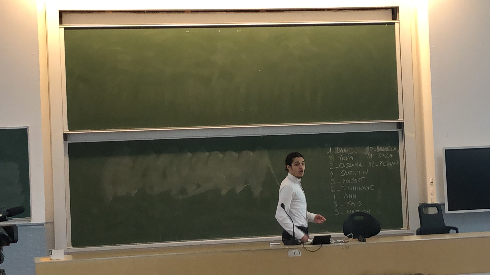
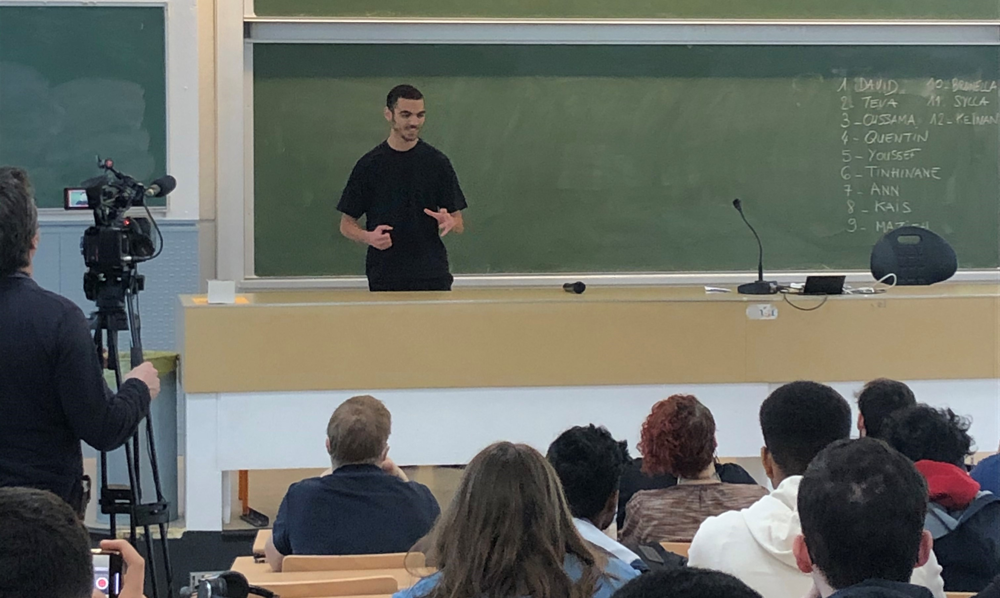
Video extracts from the contest
We recommend you to watch the following videos on our YouTube playlist
to have access to automatically generated English subtitles.
You will find in this section several video interviews of a few candidates and students present
this day, made by our team.
Notable mentions to our classmates BALENDRAN Angela, MAZGAR Selma, BOUSSERHANE Salma,
JIN Céline and JEYARAJ Jeyanika for granting us permission to use their interview with
communications teacher Mr. Nait Ouslimane, member of the jury.
We recommend you to watch the following videos on our YouTube playlist
to have access to automatically generated English subtitles.


 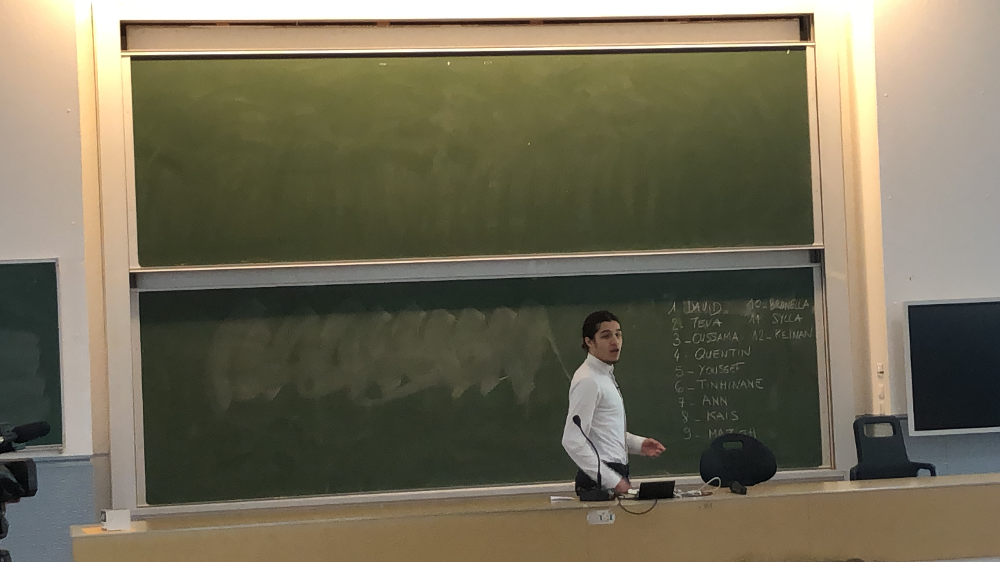
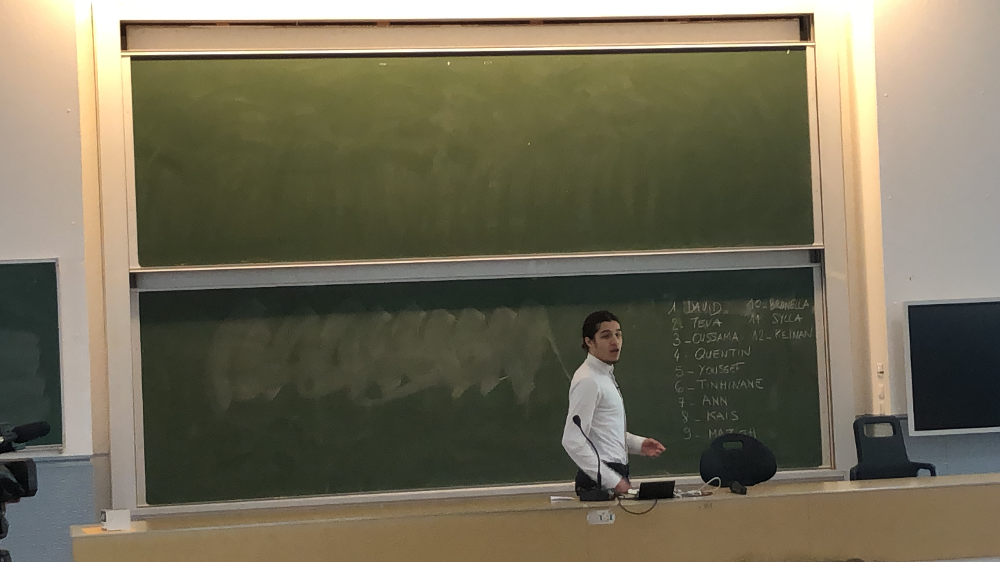

 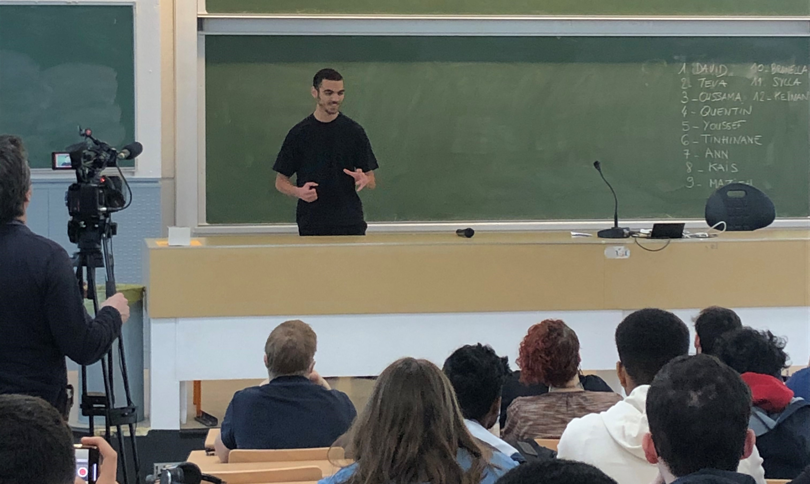
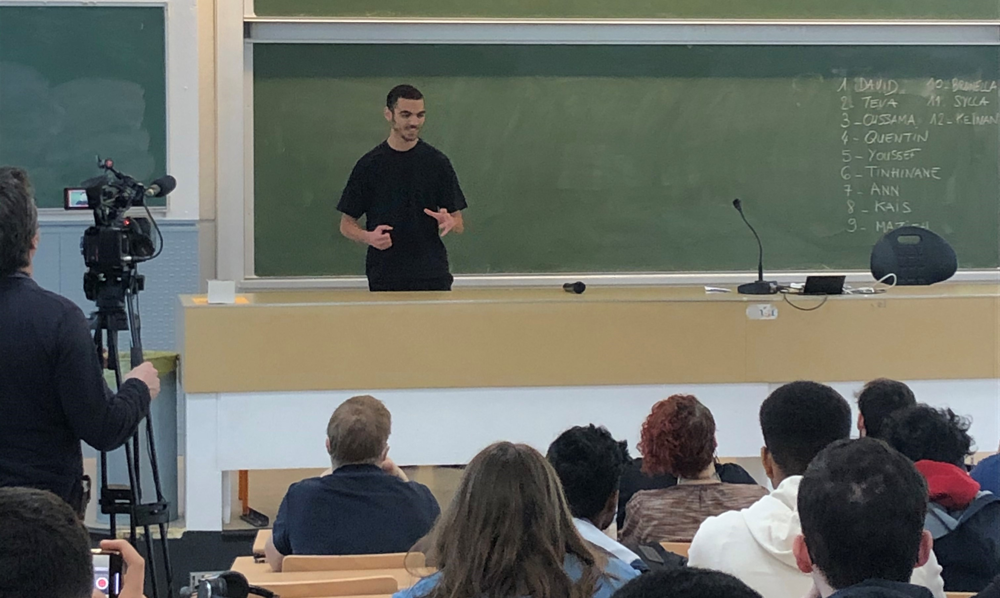